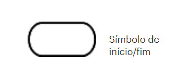
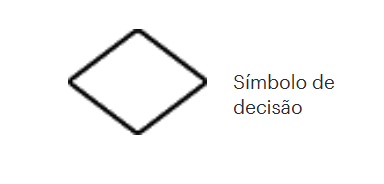
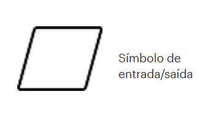
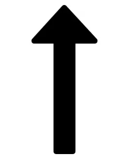

Lógica computacional
Sobre lógica computacional
O conteúdo de lógica computacional aborda os fundamentos necessários para entender como programas são planejados e construídos. Inclui o uso de fluxogramas, algoritmos e Portugol para representar soluções de forma clara. Também apresenta conceitos como variáveis, constantes e tipos de dados, além de práticas com funções e vetores. Esses elementos ajudam o aluno a desenvolver raciocínio lógico e criar programas eficientes.
O que são fluxogramas e simbologia básica
Fluxogramas são representações gráficas de um processo ou algoritmo, mostrando passo a passo o caminho lógico de execução. Usam símbolos padronizados, como: oval (início/fim), retângulo (processos), Paralelogramo (Entrada/Saída), losango (decisões) e setas (fluxo). Eles ajudam a visualizar e planejar soluções antes da programação.
Oval (início/fim)
Indica o início ou o fim de um processo.
Retângulo (Processo)
Representa uma ação ou etapa do processo.

Losango (Decisão)
Mostra um ponto de decisão que geralmente tem como resultado um "sim" ou "não" e determina o próximo caminho no fluxograma.
Paralelogramo (Entrada/Saída)
Sinaliza quando dados entram ou saem do processo.
Seta (Linha de Fluxo)
Conecta os símbolos e indica a direção do fluxo do processo.
O que são algoritmos e onde são usados
Algoritmos são sequências de passos lógicos e ordenados criados para resolver um problema ou executar uma tarefa. São usados em programação, matemática, robótica, automação, softwares e até em atividades do cotidiano, como seguir uma receita ou instruções de montagem.